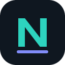

NexDownload
Send browser downloads to your local NexDownload app.
Security
The API requires a bearer token on every protected endpoint. Keep NexDownload bound to loopback unless you terminate TLS in front of it. Never expose the token in a web page or share the API port directly on an untrusted network.